Automating Azure Resource Creation: From Manual to Terraform
In this guide, we will focus on setting up an Azure environment using Terraform, starting with the creation of a resource group called openshiftsandbox. Terraform is a powerful tool for automating the provisioning of cloud infrastructure, and as the complexity of your setup increases, Terraform makes it easier to manage and maintain.
Step 1: Create a Resource Group in Azure Manually
To create a resource group manually, you would typically use the Azure portal or Azure CLI. For example, using the Azure CLI, you would run:
az group create --name openshiftsandbox --location eastus
While this is straightforward, repeating this process for multiple environments or resources can be tedious. This is where Terraform comes into play.
Step 2: Create a Resource Group with Terraform
Terraform allows you to define your infrastructure as code. Here's how you can create the same openshiftsandbox resource group using Terraform:
1. Install Terraform
First, ensure that Terraform is installed on your local machine. You can download it from the official Terraform website.
2. Set Up Your Terraform Project
Create a new directory for your Terraform files and navigate into it:
mkdir terraform-openshift-sandbox
cd terraform-openshift-sandbox
3. Write the Terraform Configuration
Create a new file named main.tf and add the following content to define the Azure provider and the resource group:
provider "azurerm" {
features = {}
}
resource "azurerm_resource_group" "openshiftsandbox" {
name = "openshiftsandbox"
location = "UK South"
}
4. Initialize Terraform
Before applying the configuration, you need to initialize Terraform. This will download the necessary provider plugins.
terraform init
5. Apply the Configuration
To create the resource group, simply run:
terraform apply
Terraform will show you the changes that will be made. Type yes to confirm and apply the configuration.
6. Verify the Resource Group
Once Terraform has finished, you can verify the creation of the resource group by checking the Azure portal or running:
az group show --name openshiftsandbox
Step 3: Accessing the Azure Resources with SSH
Once your resources are created, you might want to SSH into a virtual machine within the resource group. Here’s how to set up SSH access using Terraform:
1. Add an SSH Key to Terraform Configuration
If you want to create a virtual machine and access it via SSH, you need to update your Terraform configuration to include an SSH key pair. First, generate an SSH key pair if you don't have one:
ssh-keygen -t rsa -b 4096 -C "your_email@example.com"
Update your main.tf file to include the virtual machine and SSH configuration:
resource "azurerm_virtual_network" "example" {
name = "example-network"
address_space = ["10.0.0.0/16"]
location = azurerm_resource_group.openshiftsandbox.location
resource_group_name = azurerm_resource_group.openshiftsandbox.name
}
resource "azurerm_subnet" "internal" {
name = "internal"
resource_group_name = azurerm_resource_group.openshiftsandbox.name
virtual_network_name = azurerm_virtual_network.example.name
address_prefixes = ["10.0.2.0/24"]
}
resource "azurerm_network_interface" "example" {
name = "example-nic"
location = azurerm_resource_group.openshiftsandbox.location
resource_group_name = azurerm_resource_group.openshiftsandbox.name
ip_configuration {
name = "internal"
subnet_id = azurerm_subnet.internal.id
private_ip_address_allocation = "Dynamic"
}
}
resource "azurerm_virtual_machine" "example" {
name = "example-machine"
location = azurerm_resource_group.openshiftsandbox.location
resource_group_name = azurerm_resource_group.openshiftsandbox.name
network_interface_ids = [azurerm_network_interface.example.id]
vm_size = "Standard_DS1_v2"
storage_os_disk {
name = "example-os-disk"
caching = "ReadWrite"
create_option = "FromImage"
managed_disk_type = "Standard_LRS"
}
storage_image_reference {
publisher = "Canonical"
offer = "UbuntuServer"
sku = "18.04-LTS"
version = "latest"
}
os_profile {
computer_name = "hostname"
admin_username = "azureuser"
admin_password = "P@ssword1234!"
}
os_profile_linux_config {
disable_password_authentication = true
ssh_keys {
path = "/home/azureuser/.ssh/authorized_keys"
key_data = file("~/.ssh/id_rsa.pub")
}
}
}
2. Apply the Configuration
Run terraform apply again to provision the virtual machine and associated resources. Terraform will create the VM and configure it to accept SSH connections using your public key.
3. SSH into the VM
Once the VM is up and running, you can SSH into it using:
ssh -i ~/.ssh/id_rsa azureuser@
Step 4: Scaling Up with Terraform as Complexity Increases
As your infrastructure grows, managing it manually or even with simple CLI scripts becomes impractical. Terraform shines in complex environments where multiple resources need to be created, managed, and maintained consistently.
For example, integrating with other tools like CodeReady Containers (CRC) for testing becomes seamless with Terraform. You can define your entire testing environment, including network, storage, and compute resources, as code. This allows for reproducible and version-controlled infrastructure setups.
Terraform and GPT: Automating the Automation
If you're managing a large-scale environment, you might consider integrating AI-powered tools like GPT (Generative Pre-trained Transformer) to generate Terraform configurations or optimize your infrastructure code. GPT can help streamline the process by suggesting best practices, identifying potential issues, or even writing boilerplate Terraform code for new resources.
Conclusion
Moving from manual setups to using Terraform for infrastructure as code is a significant step in improving your efficiency and reliability when managing cloud resources. As your projects grow in complexity, Terraform provides the scalability and automation necessary to maintain control over your infrastructure.
For Azure environments, Terraform offers a robust way to manage everything from simple resource groups to complex, multi-tier applications. Combined with modern tools and AI, it becomes a powerful ally in your DevOps toolkit.
REFERENCES
Azure Templates
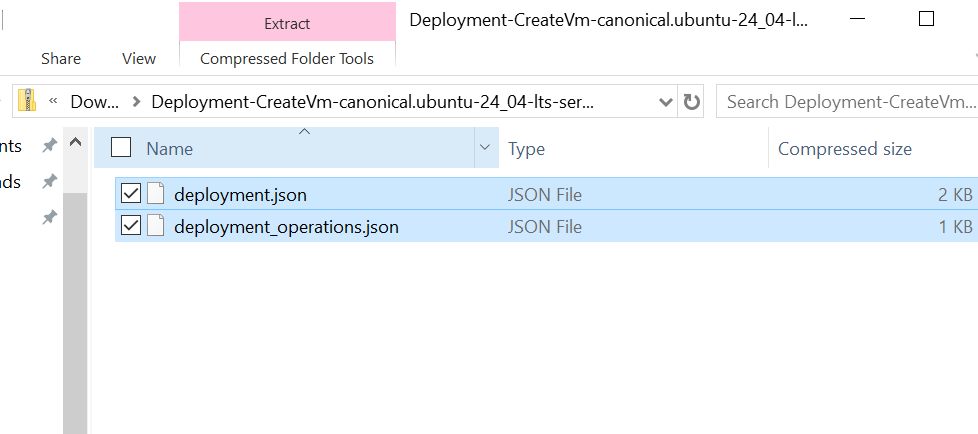
SSH with CLI
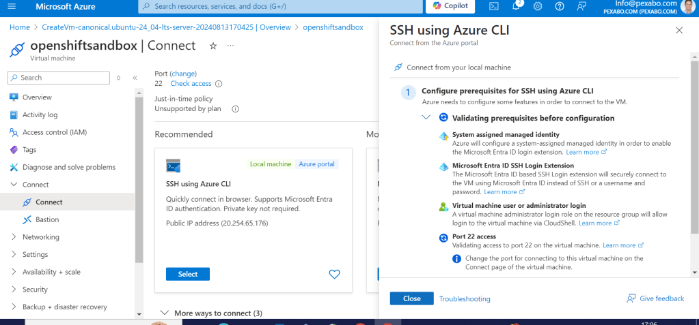
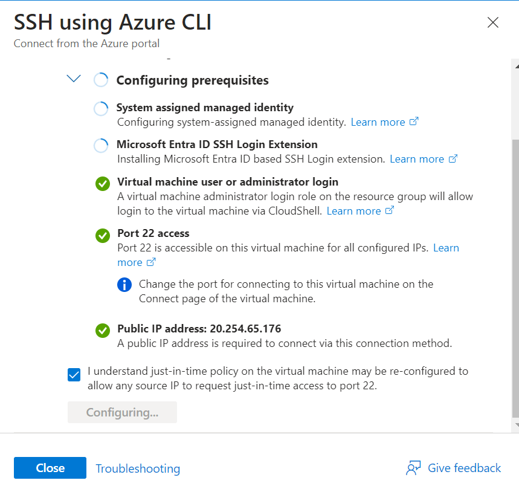
Test if this process can be completed > https://www.redhat.com/sysadmin/codeready-containers
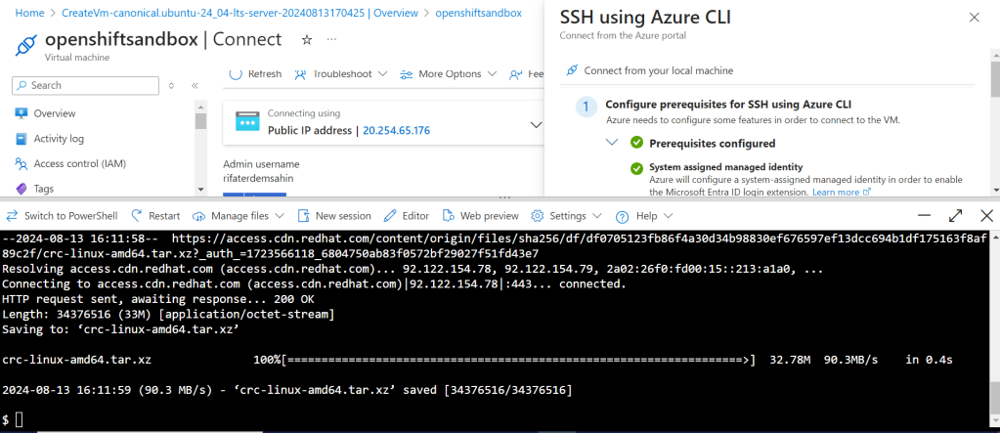
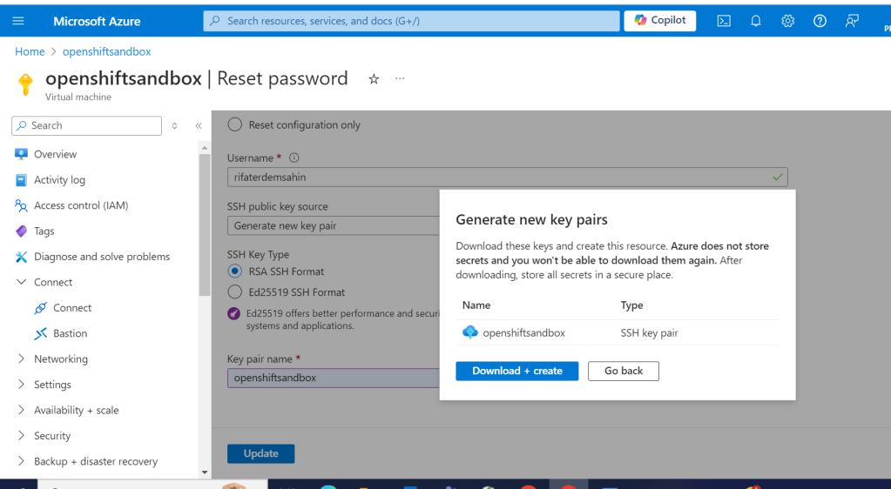
pem create download and access it
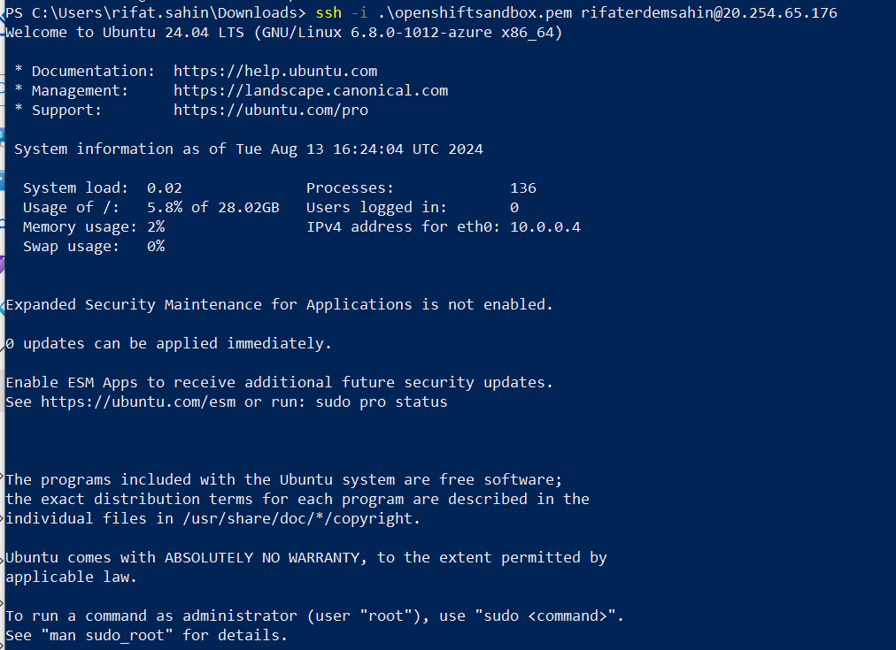
Terraform makes more sense now when completixy increases > and gpt support it. >>> issue is the trigger platform to have terraform >>> maybe azure shell can have it...!
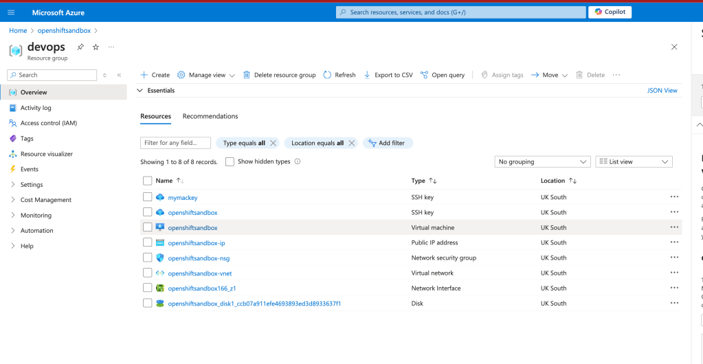
You can retrieve these values using the Azure CLI with the following commands:
1. Subscription ID
To get the subscription ID, use the following command:
az account show --query id --output tsv
2. Tenant ID
To get the tenant ID, use the following command:
az account show --query tenantId --output tsv
3. Client ID and Client Secret
To retrieve the Client ID and Client Secret for a service principal, you first need to create a service principal if you don't already have one. Here’s how to do it:
Create a new service principal:
az ad sp create-for-rbac --name
This command will output the Client ID, Client Secret, and Tenant ID. Here’s an example of what the output will look like:
{
"appId": "your-client-id",
"displayName": "
"name": "http://
"password": "your-client-secret",
"tenant": "your-tenant-id"
}
Summary of CLI Commands:
- Subscription ID:
az account show --query id --output tsv
- Tenant ID:
az account show --query tenantId --output tsv
-
Client ID and Client Secret:
-
If not already created, create a service principal:
bash az ad sp create-for-rbac --name <your-service-principal-name> --skip-assignment -
If you already have a service principal and want to retrieve its details, use:
bash az ad sp list --display-name <your-service-principal-name> --query "[].{ClientID:appId, TenantID:tenant}" --output json
Note: This command won't retrieve the client secret if it was created previously.
By using these commands, you can securely retrieve the necessary values for Terraform or any other automation tasks involving Azure.
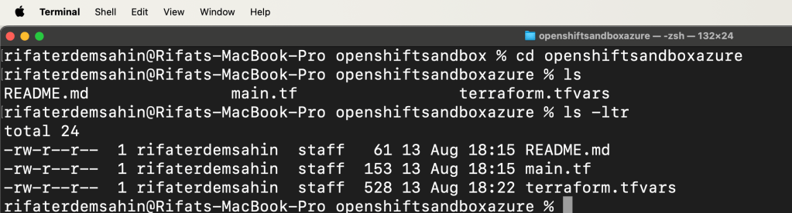
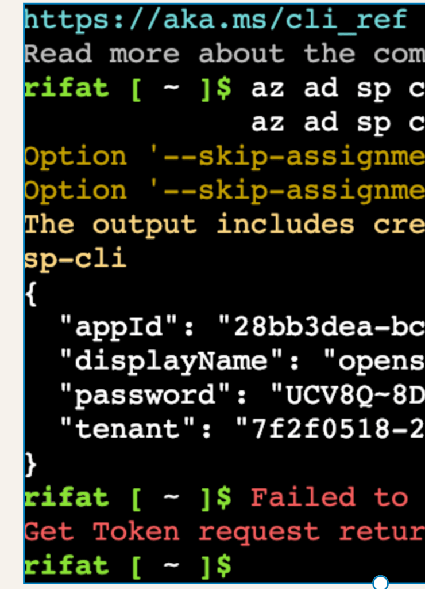
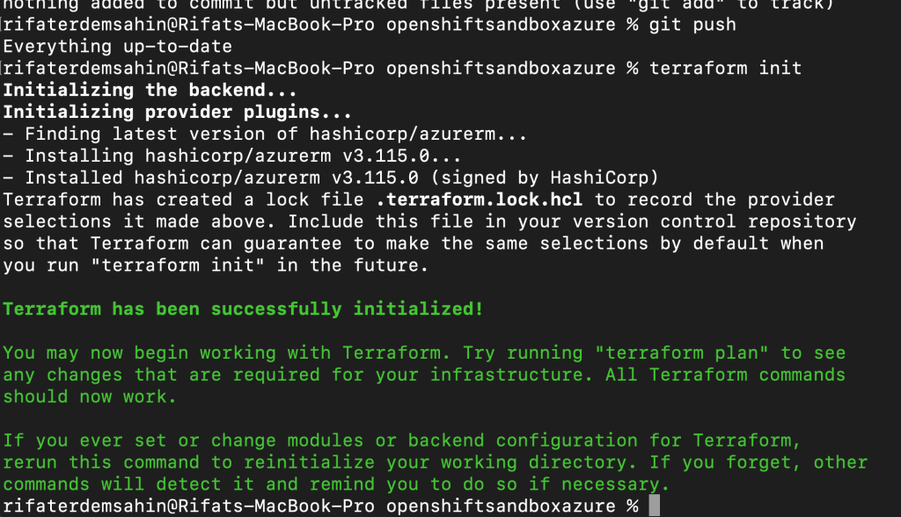
The new errors you are encountering indicate two primary issues:
1. Undeclared Variables:
-
Issue: Terraform is warning you that there are variables being used in your configuration that haven't been declared.
-
Solution: Ensure that all variables used in your Terraform configuration are declared in a
variables.tffile or within the configuration itself. Here’s an example of how to declare a variable:variable "location" { type = string default = "UK South" }If you used a variable like${var.location}in your configuration, it should be declared as shown above.
2. Azure CLI Not Found:
-
Issue: Terraform is trying to use the Azure CLI (
az) for authentication, but it cannot find theazexecutable in your system's$PATH. This usually means that the Azure CLI is not installed, or the system cannot locate it. -
Solution: Install the Azure CLI or ensure it is correctly configured in your system's
$PATH.
To Install Azure CLI:
- On Windows:
You can install it using the MSI installer from Microsoft's official website.
- On macOS:
You can use Homebrew: brew update && brew install azure-cli
- On Linux:
You can use the package manager appropriate for your distribution (e.g., apt-get, yum).
-
Ensure
azis in your$PATH: -
After installing, make sure that the
azcommand works in your terminal. You can test this by runningaz --version. -
If it is not found, you might need to add the Azure CLI to your system’s
$PATHor restart your terminal.
Summary:
-
Undeclared Variables: Ensure all variables used in your Terraform configuration are properly declared.
-
Azure CLI Error: Install the Azure CLI and ensure it’s accessible from your terminal.
After addressing these issues, re-run your Terraform commands. This should resolve the warnings and errors you are encountering.
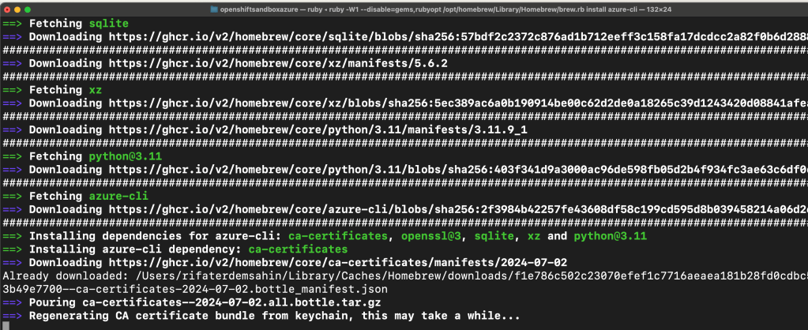
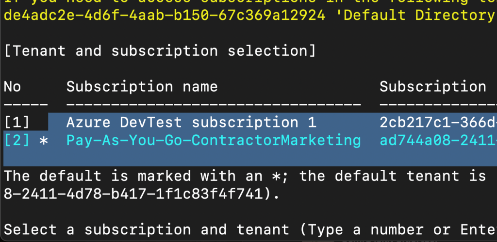
Your terraform.tfvars file is used to define variables that can be referenced throughout your Terraform configuration. This helps in keeping your configuration DRY (Don’t Repeat Yourself) by centralizing values that may change or that are sensitive, like your Azure credentials.
Security Consideration
Before proceeding, it’s crucial to mention that storing sensitive data such as client_secret and admin_password in plain text in the terraform.tfvars file is not recommended, especially when checked into version control. It is better to use environment variables or a secure secrets management service.
Example Terraform Configuration Using the .tfvars Variables
Here’s an example of how you would use these variables in your Terraform configuration:
variables.tf file
Define variables that are referenced in your configuration:
variable "subscription_id" {}
variable "client_id" {}
variable "client_secret" {}
variable "tenant_id" {}
variable "resource_group_name" {}
variable "location" {}
variable "admin_username" {}
variable "admin_password" {}
variable "ssh_public_key" {}
main.tf file
Use the defined variables in your Terraform resources:
provider "azurerm" {
features {}
subscription_id = var.subscription_id
client_id = var.client_id
client_secret = var.client_secret
tenant_id = var.tenant_id
}
resource "azurerm_resource_group" "openshiftsandbox" {
name = var.resource_group_name
location = var.location
}
resource "azurerm_virtual_machine" "example" {
name = "example-vm"
location = azurerm_resource_group.openshiftsandbox.location
resource_group_name = azurerm_resource_group.openshiftsandbox.name
network_interface_ids = [azurerm_network_interface.example.id]
vm_size = "Standard_DS1_v2"
storage_os_disk {
name = "myosdisk1"
caching = "ReadWrite"
create_option = "FromImage"
managed_disk_type = "Standard_LRS"
}
storage_image_reference {
publisher = "Canonical"
offer = "UbuntuServer"
sku = "18.04-LTS"
version = "latest"
}
os_profile {
computer_name = "hostname"
admin_username = var.admin_username
admin_password = var.admin_password
}
os_profile_linux_config {
disable_password_authentication = false
ssh_keys {
path = "/home/${var.admin_username}/.ssh/authorized_keys"
key_data = var.ssh_public_key
}
}
}
Environment Variables for Sensitive Data
If you prefer to keep sensitive data out of your .tfvars file, you can set them as environment variables in your shell:
export ARM_CLIENT_ID="your-client-id"
export ARM_CLIENT_SECRET="your-client-secret"
export ARM_SUBSCRIPTION_ID="your-subscription-id"
export ARM_TENANT_ID="your-tenant-id"
Then, you can reference these environment variables in your Terraform configuration like so:
provider "azurerm" {
features {}
subscription_id = var.subscription_id
client_id = var.client_id
client_secret = var.client_secret
tenant_id = var.tenant_id
}
Summary
-
Your
terraform.tfvarsfile defines variables used in your Terraform configuration. -
Sensitive information should be handled carefully, and using environment variables is recommended for such data.
-
The main Terraform configuration should reference these variables to ensure consistency and maintainability.
This setup will help you keep your Terraform configuration organized and secure.
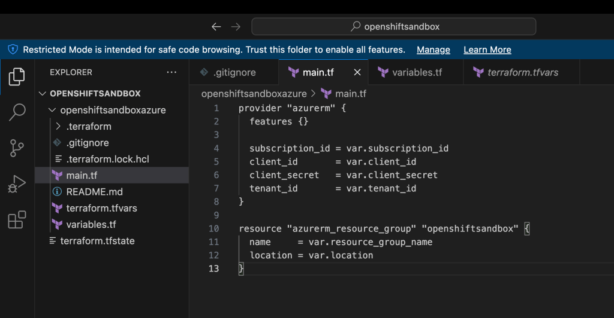
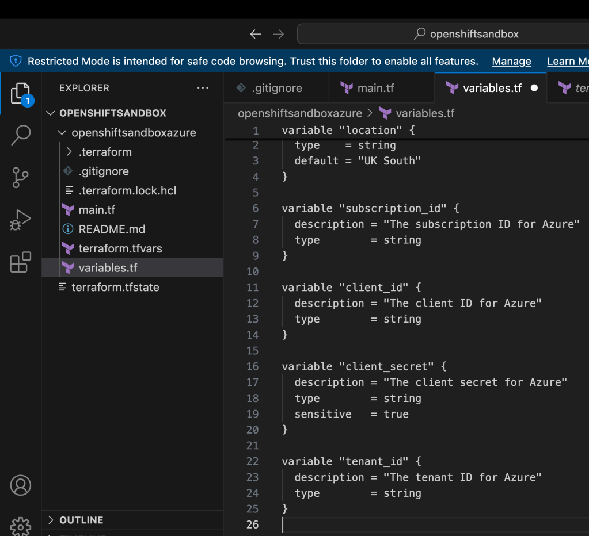
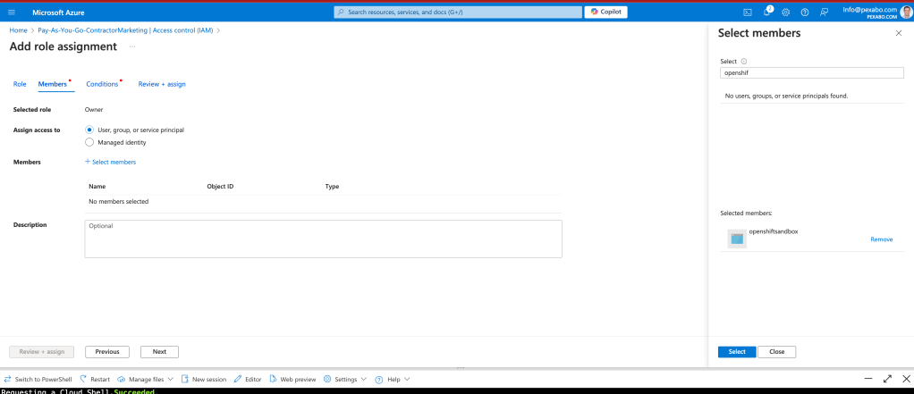
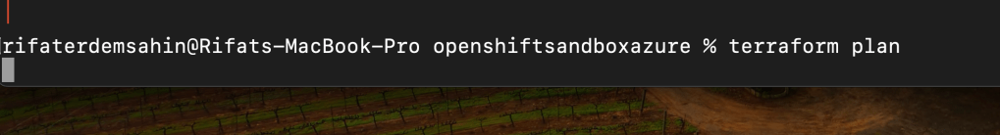
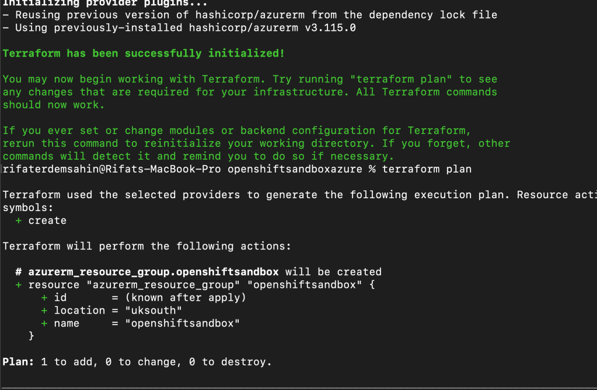
`rifaterdemsahin@Rifats-MacBook-Pro openshiftsandboxazure % terraform apply --auto-approve
Terraform used the selected providers to generate the following execution plan. Resource actions are indicated with the following
symbols:
+ create
Terraform will perform the following actions:
# azurerm_resource_group.openshiftsandbox will be created
+ resource "azurerm_resource_group" "openshiftsandbox" {
+ id = (known after apply)
+ location = "uksouth"
+ name = "openshiftsandbox"
}
Plan: 1 to add, 0 to change, 0 to destroy.
azurerm_resource_group.openshiftsandbox: Creating...
azurerm_resource_group.openshiftsandbox: Creation complete after 9s [id=/subscriptions/ad744a08-2411-4d78-b417-1f1c83f4f741/resourceGroups/openshiftsandbox]
Apply complete! Resources: 1 added, 0 changed, 0 destroyed.
rifaterdemsahin@Rifats-MacBook-Pro openshiftsandboxazure %
`
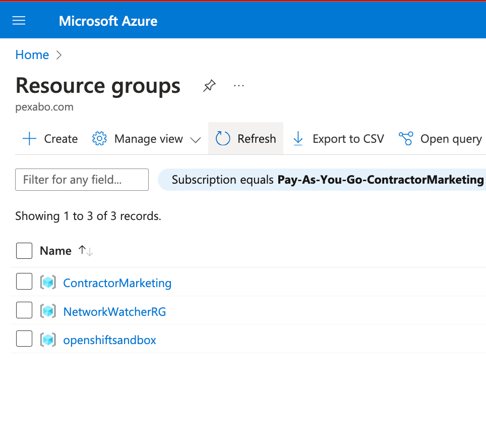
Destroy
`rifaterdemsahin@Rifats-MacBook-Pro openshiftsandboxazure % terraform destroy
azurerm_resource_group.openshiftsandbox: Refreshing state... [id=/subscriptions/ad744a08-2411-4d78-b417-1f1c83f4f741/resourceGroups/openshiftsandbox]
Terraform used the selected providers to generate the following execution plan. Resource actions are indicated with the following symbols:
- destroy
Terraform will perform the following actions:
# azurerm_resource_group.openshiftsandbox will be destroyed
- resource "azurerm_resource_group" "openshiftsandbox" {
- id = "/subscriptions/ad744a08-2411-4d78-b417-1f1c83f4f741/resourceGroups/openshiftsandbox" -> null
- location = "uksouth" -> null
- name = "openshiftsandbox" -> null
- tags = {} -> null
# (1 unchanged attribute hidden)
}
Plan: 0 to add, 0 to change, 1 to destroy.
Do you really want to destroy all resources?
Terraform will destroy all your managed infrastructure, as shown above.
There is no undo. Only 'yes' will be accepted to confirm.
Enter a value: yes
azurerm_resource_group.openshiftsandbox: Destroying... [id=/subscriptions/ad744a08-2411-4d78-b417-1f1c83f4f741/resourceGroups/openshiftsandbox]
azurerm_resource_group.openshiftsandbox: Still destroying... [id=/subscriptions/ad744a08-2411-4d78-b417-...f4f741/resourceGroups/openshiftsandbox, 10s elapsed]
azurerm_resource_group.openshiftsandbox: Destruction complete after 15s
Destroy complete! Resources: 1 destroyed.
rifaterdemsahin@Rifats-MacBook-Pro openshiftsandboxazure %
`
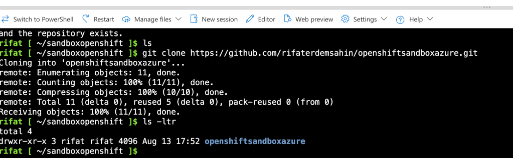
I can init here
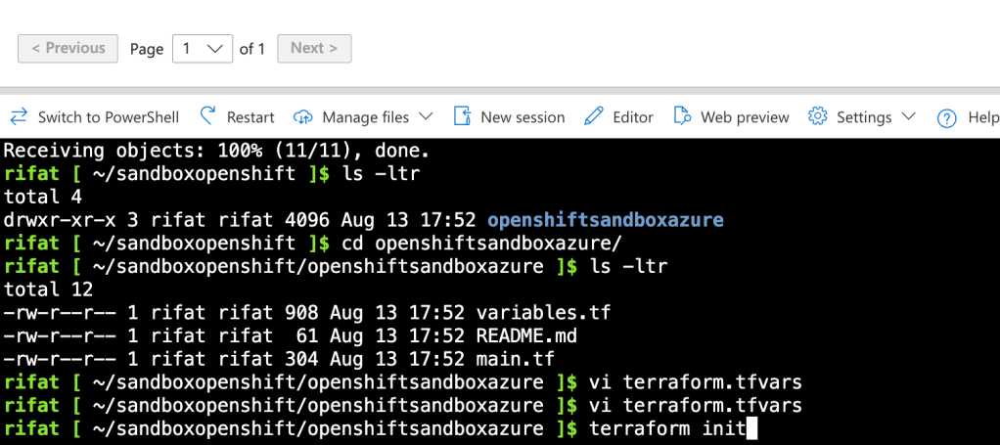
Update and Check
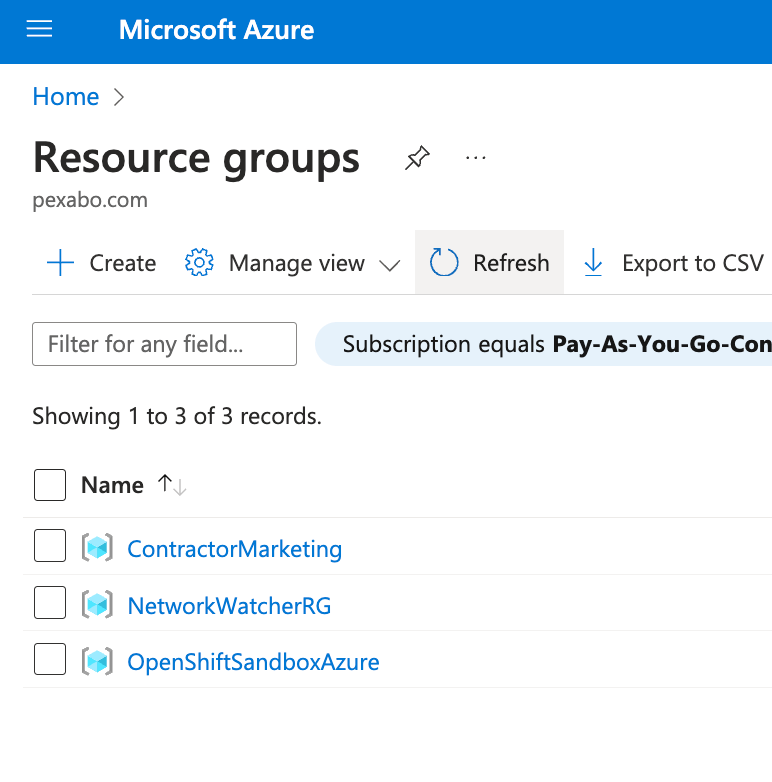
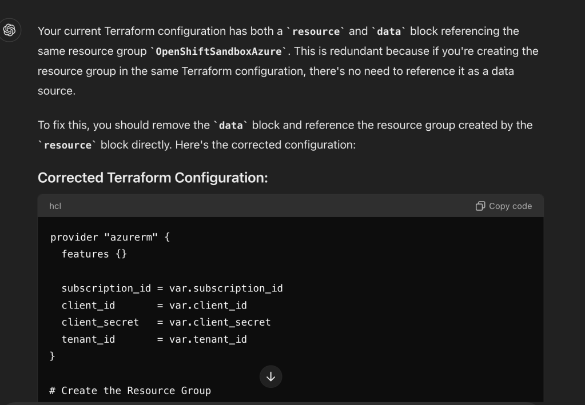
Your current Terraform configuration has both a resource and data block referencing the same resource group OpenShiftSandboxAzure. This is redundant because if you're creating the resource group in the same Terraform configuration, there's no need to reference it as a data source.
To fix this, you should remove the data block and reference the resource group created by the resource block directly. Here's the corrected configuration:
Corrected Terraform Configuration:
provider "azurerm" {
features {}
subscription_id = var.subscription_id
client_id = var.client_id
client_secret = var.client_secret
tenant_id = var.tenant_id
}
Create the Resource Group
resource "azurerm_resource_group" "openshift" {
name = "OpenShiftSandboxAzure"
location = var.location
}
Create a Virtual Network
resource "azurerm_virtual_network" "openshiftnetwork" {
name = "openshift-vnet"
address_space = ["10.0.0.0/16"]
location = azurerm_resource_group.openshift.location
resource_group_name = azurerm_resource_group.openshift.name
}
Create a Subnet
resource "azurerm_subnet" "openshiftnetwork" {
name = "openshift-subnet"
resource_group_name = azurerm_resource_group.openshift.name
virtual_network_name = azurerm_virtual_network.openshiftnetwork.name
address_prefixes = ["10.0.1.0/24"]
}
Create a Network Interface
resource "azurerm_network_interface" "openshiftnetwork" {
name = "openshift-nic"
location = azurerm_resource_group.openshift.location
resource_group_name = azurerm_resource_group.openshift.name
ip_configuration {
name = "internal"
subnet_id = azurerm_subnet.openshiftnetwork.id
private_ip_address_allocation = "Dynamic"
}
}
Create a Virtual Machine
resource "azurerm_linux_virtual_machine" "openshift" {
name = "OpenShiftSandbox"
location = azurerm_resource_group.openshift.location
resource_group_name = azurerm_resource_group.openshift.name
network_interface_ids = [azurerm_network_interface.openshiftnetwork.id]
size = "Standard_DS1_v2"
# Admin username and SSH key
admin_username = var.admin_username
admin_ssh_key {
username = var.admin_username
public_key = var.ssh_public_key
}
# Set up the OS disk
os_disk {
name = "openshift-osdisk"
caching = "ReadWrite"
storage_account_type = "Standard_LRS"
}
# Use the latest Ubuntu 24.04 LTS image
source_image_reference {
publisher = "Canonical"
offer = "0001-com-ubuntu-server-jammy"
sku = "24_04-lts-gen2"
version = "latest"
}
disable_password_authentication = false
admin_password = var.admin_password
}
Output the private IP address of the VM (optional)
output "private_ip" {
value = azurerm_network_interface.openshiftnetwork.private_ip_address
}
Explanation:
-
Removed
data "azurerm_resource_group"Block: Since you are creating the resource group in this configuration, there's no need to reference it as a data source. Instead, all resources directly reference the resource group created byazurerm_resource_group.openshift. -
Consistent Naming: Ensure consistent naming across your resources, which helps in maintaining clarity.
-
Direct Reference: The
azurerm_virtual_network,azurerm_subnet,azurerm_network_interface, andazurerm_linux_virtual_machineresources now directly reference the resource groupazurerm_resource_group.openshift.
Next Steps:
- Initialize Terraform:
terraform init
- Plan the Deployment:
terraform plan
- Apply the Plan:
terraform apply --auto-approve
This configuration will create the resource group OpenShiftSandboxAzure if it doesn't exist and then proceed to create the virtual network, subnet, network interface, and the virtual machine as specified.
Imported from rifaterdemsahin.com · 2024